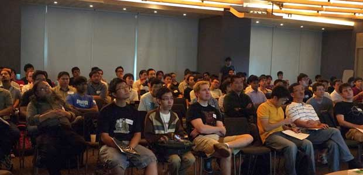
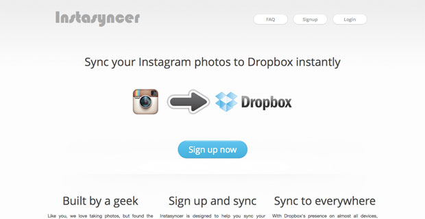
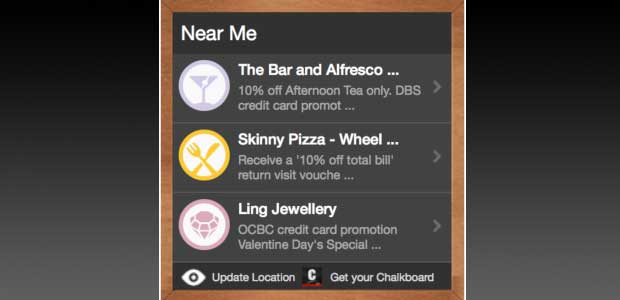
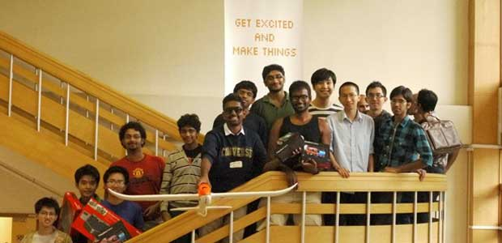

Laurence Putra Franslay
Hacker. Sysops. Developer.
Full version available at cv.geeksphere.net
A geek at heart, I love to play with new technologies to keep myself up to date with developments within the tech world. I specialise in getting things done, and making sure it doesn't break after. Comfortable working on most *nix operating systems too.
Experience includes
- Languages:
- Javascript
- HTML5/CSS3
- Python (Flask/Django)
- C/C++
- C#/.NET Framework
- Database/Information Stores:
- PostgreSQL
- memcached
- mongodb

GeekcampSG
Helped organised GeekcampSG 2011, 2012 and 2013, bringing geeks out from all over the world on a Saturday for a day of intellectual sharing.

Instasyncer
Sync your Instagram photos to Dropbox instantly

Chalkboard Webwidget
Displayed Promotions near a user when they browse a page with the Webwidget on it. Done with Javascript and HTML5.
Chalkboard Publisher Platform
Platform for Publishers and Developers manage their use of Chalkboard Webwidgets, as well as the API.

Hack&Roll '12
On the organising team of Hack&Roll '12, bringing geeks from all over NUS to come together for 24 hours of coding and building stuff.
‹
›
BillPin Pte Ltd
(
Link)
Engineer : May 2013 - ?
- Joined BillPin right after graduation
- Ported over Billmonk Database following the acquisition of Billmonk
- Sysadmin of the team, in charge of handling all the servers
- Redesigned the backend of BillPin to be faster for the users
- Worked on Homie.co after a pivot
- Optimised performance of queries on MongoDB
- Generated reports for the business side to use
- Generated reports of potential clients for user acquisition push
- Created internal dashboards for easy visualising of data
Newton Circus Pte Ltd
(
Link)
Engineer (Intern): May 2012 - Aug 2012
- Joined Newton Circus as an intern as a fellow in the StartupRootsSG fellowship
- Headed and completed the Ideasian project during internship stint
- Used Codeigniter, MongoDB (with HA) and Twitter Bootstrap
- Organised UP Singapore, with a focus on getting sponsors, venue, as well as publicity for the event targeted towards geeks
- Wrote API Docs for the data available for UP Singapore
- Wrote wrappers around some of the API, converting giant XML API from 3rd party sources into RESTful and lightweight JSON API
Chalkboard Pte Ltd
(
Link)
Engineer (Contracted Consultant): Aug 2011 - March 2012
Engineer (Intern): May 2011 - Aug 2011
- Joined Chalkboard as a fellow in the StartupRootsSG fellowship
- Created the Publishers' Platform on Python/Django
- Created the Chalkboard Webwidget using HTML5 supported by an in-house IPLocator backend
- Customized the webwidget for specific clients
- Customized the mobile web app for specific clients
- Set up the IPLocator backend, and scaled it using memcached
- Added additional API functions to allow other services to use it
- Moved the team from SVN to Git
National University of Singapore
(
Link)
Undergraduate Discussion Group Leader (CS1010): Aug 2011 - Nov 2011
- Imparted knowledge of C and programming methodologies to the students
- Core module for Computer Science majors
Undergraduate Discussion Group Leader (CS1101S): Aug 2010 - Nov 2010
- Taught Scheme, a dialect of Lisp to the students
- Involved in building the JFDI system used by the students, a learning tool designed to gamify education.
- Core module for Computer Science majors
Hulutech
(
Link)
Engineer: Jan 2011 - April 2011
- On the team redesigning the 65Daigou site
- Provided support and experience to the team with regards to the LAMP stack on AWS
- Created a backend book ordering system for MPMmath
Computing for Voluntary Welfare Organisations
(
Link)
Engineer: May 2010 - May 2011
- On the team that implemented the MINDS eClient system
- Designed and created the Client management section on Drupal 6
- Maintained the code server, with specific focus on security, using software such as DenyHosts
GeekcampSG
(
Link)
Organiser: July 2011 - Present
- Created the website Geekcamp.SG
- Organised GeekcampSG, one of the largest Geek conferences in Singapore
- Primarily in charge of sponsorships and marketing
- Grew the community to 1,500 geeks in 2013, from 700 in 2012, with 500 of them being students
Singapore MongoDB User Group
(
Link)
Organiser: Feb 2012 - Present
- Started the MongoDB user group in Singapore
- Grew the community to over 150 members in a period of 6 months
Python User Group Singapore
(
Link)
Committee Member: Oct 2013 - Present
- PyConSG Subcommittee: Jan 2013 - Present
- Primarily in charge of sponsorships
- Raised sufficient money to ensure smooth running of the conference
Instasyncer
(
Link)
Creator: May 2012 - Present
- Helps users sync their Instagram photos to Dropbox instantly
- Stack used: PHP/Codeigniter and MongoDB
- High availability backend with automated daily database backups
- Wrote it primarily to solve a personal pain point
StartupRootsSG
(
Link)
Organiser: Jan 2012 - July 2012
- Linked the top startups in Singapore to the top students
- Interviewed (technical) students
- Exposed the fellows to the local tech startup community throughout the fellowship
IWasntPaid.com
(
Link)
Founder: Jan 2012 - June 2012
- Website for freelance developers to report their horror stories and hopefully get paid for what they have done
- Helped freelancers get their pay back
National University of Singapore
(
Link)
- Bachelor of Computing in Computer Science: Aug 2009 - May 2013
- Focus in Distributed Systems and Security
- NUSHackers (Link): Aug 2010 - Sept 2012
- Coreteam member
- Organised Hack Workshop Series, a series of workshops educate students about technologies
- Organised Friday Hacks, a weekly meetup to for hackers to mingle
- Organised Hack&Roll, a 24-hour hackathon, in NUS
- Found sponsors for the events
- Computing for Voluntary Welfare Organisations (Link): Aug 2009 - May 2011
- Held workshops teaching the new applicants about PHP, as well as the LAMP stack
- Created and graded the PHP assignments